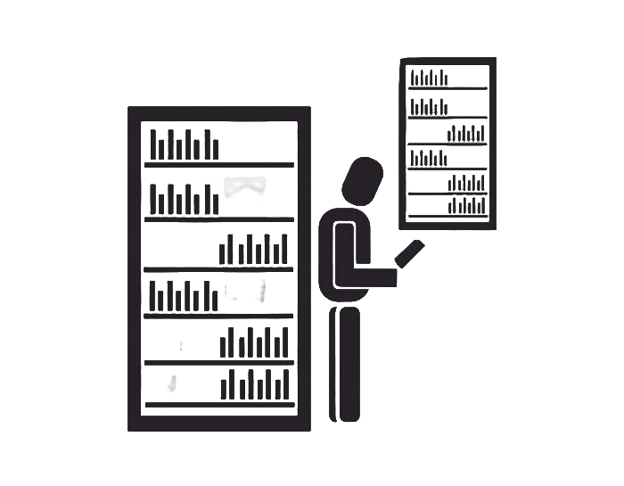

<header class="app-header ff-inter">
  <div class="logo">
    
  </div>
  <nav class="navigation">
    <button mat-flat-button color="primary"><b>Livros</b></button>
    <button mat-flat-button color="primary"><b>Empréstimo de Livros</b></button>
    <button mat-flat-button color="primary"><b>Sinopses de Livros</b></button>
    <button mat-flat-button color="warn">
      <b>Logout</b>
    </button>
  </nav>
</header>
